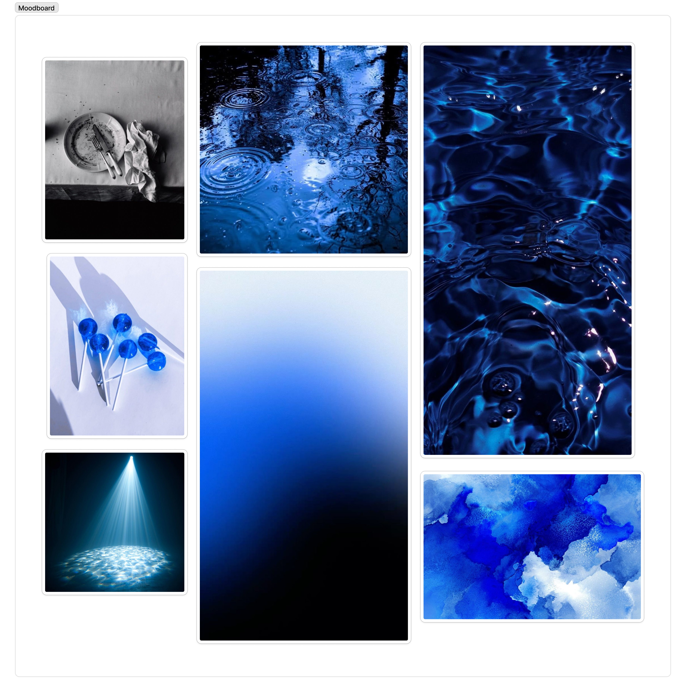
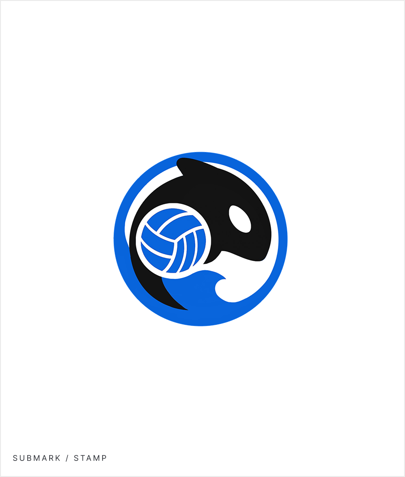

At a glance
Orcas is a volleyball organization running competitive teams, volleyball runs, and open tournaments. They had no consistent visual identity, nothing that could tie a team jersey to a tournament poster to an Instagram story. I built the brand from the ground up: positioning, logo, color, typography, and a system applied across merchandise, jerseys, and event materials.
Goal
A cohesive identity that works across teams, events, merch, and social media, not just on court.
Approach
Pillars first, visuals second. Every design decision laddering back to "calm, direct, hungry."
Deliverables
Logo system, color palette, type system, and jersey design. The team applied the brand to their social media pages, advertisements and merch from there.
Outcome
A brand Orcas can wear, post, and advertise with, consistent whether it's a tournament banner or a team hoodie.
Starting with who they actually are.
Orcas is more than a volleyball team. They run competitive teams across different levels, organize volleyball runs for the wider community, and host tournaments that bring players and spectators together. With activity happening across all three, they needed a brand that could represent all of it coherently: on a jersey, a tournament flyer, a social post, and a merch drop.
When they came to me, they had a name and a vision but no visual identity. No logo, no defined colors, no consistent way to show up anywhere. The challenge wasn't just designing something that looked good. It was building a system flexible enough to serve a competitive team and a public-facing organization at the same time.
Defining the brand identity.
Before touching any visuals, I established three brand pillars to guide the work: Calm. Direct. Hungry. Having these defined early meant every design decision had a clear reference point. If something didn't ladder back to at least one of the three, it didn't make the cut.
I also gathered supporting keywords during the brainstorm: disciplined, confident, sharp, playful. These helped define the full range of the identity, giving me guardrails on both ends so the brand wouldn't tip too rigid or too casual.
To ground all of this visually, I built a moodboard. The brand needed to feel composed without feeling passive, and athletic without feeling loud. The name Orcas helped anchor that direction: an animal associated with stillness, precision, and quiet intensity. The moodboard became the reference I kept returning to when making decisions about color, type, and form.

Color palette.
Coming out of the moodboard, a color direction started to form. The imagery that resonated most was high-contrast and stripped back: dark backgrounds, clean whites, very little noise. That pushed me toward keeping the palette simple.
The orca itself was the most natural starting point. The animal is essentially monochrome: black, white, and grey. Building the palette around that felt right for the brand. It was grounded, distinctive, and didn't need to fight for attention. From there, I added the blue color as an accent to create some contrast while the monochrome base keeps everything else from competing with it.

Type system.
I chose two typefaces with clearly defined roles. Grizzlies is used for anything that needs visual weight: headlines, jersey graphics, score displays. It only ever appears in uppercase, which keeps it from being overused. Josefin Sans handles body copy, captions, and labels. It's geometric enough to feel intentional but readable enough to not get in the way.
Defining clear roles for each typeface early on meant I had a consistent rule to apply across every touchpoint, rather than making decisions case by case.
The mark.
My approach was to identify the three things that needed to come through: the animal, the sport, and a sense of movement. From there, I built a circular badge that fuses all three. The orca anchors the identity, the volleyball grounds it in the sport, and the wave adds energy without adding noise. The enclosing ring holds everything together and nods to the idea of a pod. The goal was a mark that could sit on a jersey, a tournament banner, or a social profile and read correctly in all three contexts.



The team jerseys.
The jersey extended the brand system directly onto the kit. Black base with white side markings referencing orca patterning, the stamp submark on the chest, and Grizzlies for player numbers and names. The libero jersey is a straight inversion to white so the position reads immediately without introducing anything new. Sponsor logos are tiered by importance and laid out accordingly. A faint wave pattern fades in at the bottom, consistent with the water motif used throughout.


What I learned.
Branding work pushed me to think about design systems at a different scale than UI work typically requires. In product design, a component needs to work at a few screen sizes. Here, the same mark needed to hold up on a jersey, a phone screen, a tournament banner, and a sticker. That forced a level of simplicity I wouldn't have arrived at otherwise, and it's something I now think about more deliberately in product work too.
Starting with the brand pillars before touching any visuals was the most useful thing I did on this project. Having "calm, direct, hungry" as a shared reference made decisions easier to justify and easier to push back on. It also gave the client a framework to evaluate work against, rather than reacting to aesthetics alone. That's a habit I've carried into how I approach design briefs generally.
If I were to continue, I'd want to define how the brand extends into digital templates: social post layouts, event pages, score graphics. The system has the bones for it, but those touchpoints were out of scope here. Documenting usage guidelines more formally would also help ensure the brand stays consistent as the organization grows and more people start applying it.